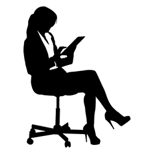

Test uw kennis
… over het volledige opleidingsonderdeel: deel 1

Kies telkens de meest geschikte oplossing. Klik op de vraag om een verklaring van het juiste antwoord te krijgen, gebruik daarna de “Vorige-” of “Back-” toets in uw browser om naar deze vragenlijst terug te keren.
Vraag 1
In welk opzicht verschilt enchondrale botvorming van endesmale botvorming?
Vraag 2
Hoe wordt de grondsubstantie van het bindweefsel het best omschreven?
Vraag 3
Een uniek kenmerk van epithelia is:
Vraag 4
Heparine en histamine komen voor in de specifieke granula van:
Vraag 5
Welke uitspraak over de verschillende epidermislagen is waar?
Vraag 6
Lipofuscinekorrels kunnen het beste omschreven worden als:
Vraag 7
Welke uitspraak over contractiele filamenten is correct?
Vraag 8
Welke bewering over chondrocyten is juist?
Vraag 9
Welke van de volgende uitspraken geeft een correcte beschrijving van de functie van een cytoplasma-insluitsel?
Vraag 10
Wat is een motorische eenheid?
Vraag 11
Borstelzomen worden het best als volgt omschreven:
Vraag 12
Welke van de volgende beweringen over de lichaamsvochten is correct?
Vraag 13
Welke van de volgende beschrijvingen past het best bij een basale membraan?
Vraag 14
Welke van de volgende beweringen geldt voor het geleidingssysteem van het hart?
Vraag 15
Welke is de beste omschrijving voor bloedplaatjes?
In welk opzicht verschilt enchondrale botvorming van endesmale botvorming?
1. Collageen en grondsubstantie zijn de eerste substanties die door osteoblasten worden afgescheiden
2. Kraakbeen wordt vernietigd voordat bot wordt gevormd
3. Osteoblasten worden omgeven door bot voor ze in osteocyten worden omgezet
4. De oorspronkelijke benige spiculae worden groter door appositionele groei
5. Osteoblasten secreteren alkalische fosfatase
Vraag 2
Hoe wordt de grondsubstantie van het bindweefsel het best omschreven?
1. De twee belangrijkste bestanddelen zijn glycosaminoglycanen en structurele glycoproteïnen
2. Het is een basofiele structuur
3. Het is een zeer geordende structuur
4. De bestanddelen zijn opvallend uniform in het hele lichaam
5. Het bevat een grote hoeveelheid ongebonden watermoleculen
Vraag 3
Een uniek kenmerk van epithelia is:
1. de aanwezigheid van type IV-collageen in de extracellulaire matrix
2. de aanwezigheid van nexusverbindingen
3. een merocriene secretie
4. het vaatrijke karakter
5. de aanwezigheid van intermediaire (keratine)filamenten
Vraag 4
Heparine en histamine komen voor in de specifieke granula van:
1. lymfocyten
2. monocyten
3. neutrofiele granulocyten
4. eosinofiele granulocyten
5. basofiele granulocyten
Vraag 5
Welke uitspraak over de verschillende epidermislagen is waar?
1. Het stratum basale bevat geen keratinefilamenten
2. In de bovenste lagen van het stratum spinosum liggen de eleïdinekorrels
3. In het stratum granulosum worden keratohyaliene korrels vrijgezet
4. In het stratum lucidum worden lamellaire korrels vrijgezet
5. In het stratum corneum vormt keratohyaline een amorfe matrix met daarin keratinefilamenten
Vraag 6
Lipofuscinekorrels kunnen het beste omschreven worden als:
1. restlichaampjes die een geelbruin pigment bevatten
2. typische structuren in actieve macrofagen
3. zijn het talrijkst in cellen met een korte levensduur en een hoge turnover
4. autofagievesikels
5. heterofagosomen
Vraag 7
Welke uitspraak over contractiele filamenten is correct?
1. Dikke filamenten bestaan uit myosine en tropomyosine
2. Een van de troponinesubeenheden van dunne filamenten vertoont adenosinetrifosfataseactiviteit (ATPase)
3. Dikke filamenten bevatten desmine
4. Dunne filamenten zijn bevestigd aan a-actinine
5. Dikke filamenten zijn bevestigd aan de celmembraan
Vraag 8
Welke bewering over chondrocyten is juist?
1. Ze communiceren via nexusverbindingen
2. Ze secreteren chondromucoproteïnen
3. Ze worden gevoed door de nabijgelegen capillairen
4. Ze zijn niet in staat tot deling
5. Ze vernietigen kraakbeen
Vraag 9
Welke van de volgende uitspraken geeft een correcte beschrijving van de functie van een cytoplasma-insluitsel?
1. Vetdruppeltjes zijn opslagdepots voor niet-gemetaboliseerde nevenproducten van het metabolisme.
2. Hemoglobine is een afbraakproduct van rode bloedcellen
3. Mitochondriën genereren chemische energie uit verteringsproducten
4. Hemosiderine wordt gesecreteerd in de gal, waar het bijdraagt tot vertering en absorptie
5. Melanine is belangrijk voor de bescherming van bepaalde dieren tegen roofdieren
Vraag 10
Wat is een motorische eenheid?
1. Een sarcomeer
2. Een skeletspiercel
3. Een motorisch neuron
4. Een axon en alle spiercellen die dit axon innerveert
5. Een druiventros-vormige vertakking van een axonuiteinde op een spiercel
Vraag 11
Borstelzomen worden het best als volgt omschreven:
1. ze zijn vooral goed ontwikkeld in de bovenste luchtwegen
2. typisch voor deze structuren is dat ze bedekt zijn met een slijmlaag
3. onder de lichtmicroscoop zien ze eruit als een gestreepte laag die evenwijdig ligt met het vrije oppervlak
4. ze zijn enkel zichtbaar onder de elektronenmicroscoop
5. ze komen typisch voor op een oppervlak dat gespecialiseerd is in absorptie
Vraag 12
Welke van de volgende beweringen over de lichaamsvochten is correct?
1. De aanwezigheid van interstitieel vocht is beperkt tot de ruimte tussen de celmembraan en de
subcellulaire organellen
2. Lichaamsvochten worden in drie compartimenten gescheiden
3. Lymfe wordt vervoerd in een 'éénrichtings'-vaatstelsel
4. Erythrocyten, bloedplaatjes en macromoleculen zijn beperkt tot het hart- en vaatstelsel
5. Lymfe heeft dezelfde samenstelling als de amorfe grondsubstantie
Vraag 13
Welke van de volgende beschrijvingen past het best bij een basale membraan?
1. Een laag die epitheelcellen van elkaar scheidt
2. Een amorfe laag die onder bijna alle epithelia ligt
3. Een sterk ontwikkelde laag bij maligne tumoren
4. Een laag die het vezelige type IV-collageen bevat
5. Een product van het bindweefsel dat onder het epitheel ligt
Vraag 14
Welke van de volgende beweringen geldt voor het geleidingssysteem van het hart?
1. De uitgebreide innervatie naar de atrioventriculaire knoop is afkomstig van het autonoom
zenuwstelsel
2. Het deel van het ventriculair myocard dat het eerst een actiepotentiaal krijgt, ligt naast het
atrioventriculair septum
3. De actiepotentiaal wordt van de sinoatriale knoop naar het ventriculair myocard gebracht door
gespecialiseerde geleidende cellen
4. De contractiele cellen van het atriale myocard vormen de verbinding tussen de sinoatriale en de
atrioventriculaire knoop
5. Geleidende cellen verspreiden zich doorheen het subepicard en bereiken zo alle delen van het
ventriculair myocard
Vraag 15
Welke is de beste omschrijving voor bloedplaatjes?
1. Ze gaan aan elkaar hechten wanneer ze in contact komen met bindweefselvezels
2. Ze bevatten geen specifieke granula
3. Ze synthetiseren serotonine, i.e. een stof met vasoconstrictoire eigenschappen
4. Ze zijn in staat om bacteriën te fagocyteren
5. Ze zetten heparine vrij